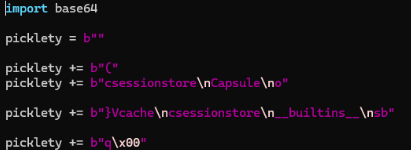
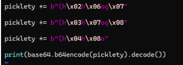

Python pickle Deserialization Opcodes Base64
Overview
The application accepted a Base64-encoded pickle payload, but several banned strings and opcodes made the usual approach difficult. I needed to read flag.txt without writing its name directly into the payload, calling functions with REDUCE, or ending the pickle with STOP.
I used OBJ to call functions and BUILD to put a builtins dictionary into a capsule's cache. From there, I could recover the functions I needed, construct the filename from integers, and print the result before the unfinished pickle caused a load error.
Initial Analysis
I started by unzipping the challenge files. There were two Python scripts, so I read both to understand how the application handled my input and which restrictions I had to work around.
The input needed to be a Base64-encoded pickle. Encoding it was the final step; first, I had to build pickle bytes that avoided the filter.
Restrictions
The restrictions that mattered to my approach were:
| Blocked value | Effect on my payload |
|---|---|
. | I could not include a literal dot in the filename or use the normal STOP opcode. |
flag | I had to construct the filename instead of including flag.txt directly. |
os, system | These strings also had to stay out of the payload. |
REDUCE | I needed a different opcode to call functions. |
Bypassing REDUCE
Since REDUCE was specifically blocked, I used OBJ instead. In this payload, OBJ let me call a function already on the pickle stack with the arguments I had placed after it.
I built the payload manually in a byte string named picklety. This was pretty hard for me. I spent a lot of time looking up pickle opcodes and their byte formats to work out how to build each part.
Accessing Builtins and Useful Functions
The allowed sessionstore module gave me a way to reach sessionstore.__builtins__. In this challenge, that was the builtins dictionary.
I created a Capsule and used the BUILD opcode to place that dictionary into its cache. The original payload excerpt shows the exact __builtins__ identifier and the state used for the cache:

Next, I used sessionstore.render. Calling render(cap, "open") looked up "open" in the capsule's cache and returned the real open function. That lookup did not require resolving open through pickle's normal find_class check.
I repeated the same approach for list, print, and bytes. These lines are from my payload builder; they depend on the capsule already saved in memo slot 0:
picklety += b"csessionstore\nrender\nq\x01"
picklety += b"(h\x01h\x00Vopen\noq\x02"
picklety += b"(h\x01h\x00Vlist\noq\x03"
picklety += b"(h\x01h\x00Vprint\noq\x04"
picklety += b"(h\x01h\x00Vbytes\noq\x05"At that point, I had the functions needed to build the filename, open the file, collect its contents, and print them.
Constructing flag.txt
I could not put flag.txt directly into the payload because both flag and . were banned. Instead, I built a bytes object from this integer list:
102, 108, 97, 103, 46, 116, 120, 116Those values represent flag.txt. Using the recovered bytes function let me construct the filename during unpickling, without putting the filename itself into the submitted pickle bytes.
The value 46 needed extra care: it is the byte value of a dot. Encoding that value directly as a binary integer byte would introduce the literal . byte I was trying to avoid. I used the text form of the INT opcode, I46\n, instead. The \n here represents the newline that terminates the integer.
Executing Without STOP
There was still another dot to deal with. A normal pickle ends with STOP, and that opcode is represented by .. Since the dot was banned, I left STOP out entirely.
Pickle executes opcodes as it reads them. My payload called open with the constructed filename, passed the file to list, and then passed that result to print. The print operation ran before the loader reached the end of the payload.
Base64 Encoding and Submission
Once the payload was assembled, I Base64 encoded picklety and submitted the encoded string to the application.

The final print(base64.b64encode(picklety).decode()) produced the submission string. It was separate from the print call encoded inside the pickle, which printed the file contents during deserialization.
Lessons Learned
- Blocking
REDUCEdid not remove every way to call functions. I could still useOBJ. - I had to think about the exact bytes in the payload. The text form of
INTlet me represent46without including a dot byte. - The final unpickling error did not undo the operations that had already run. Leaving out
STOPworked here because the application ignored that error after the output was printed.